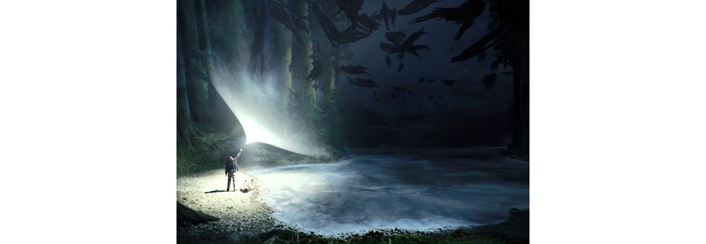
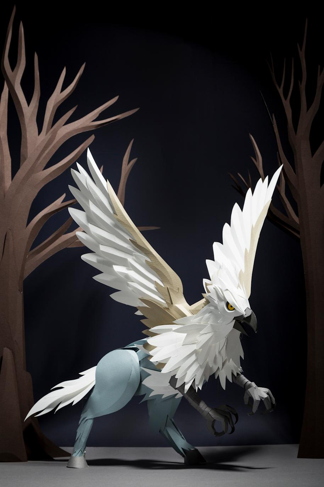
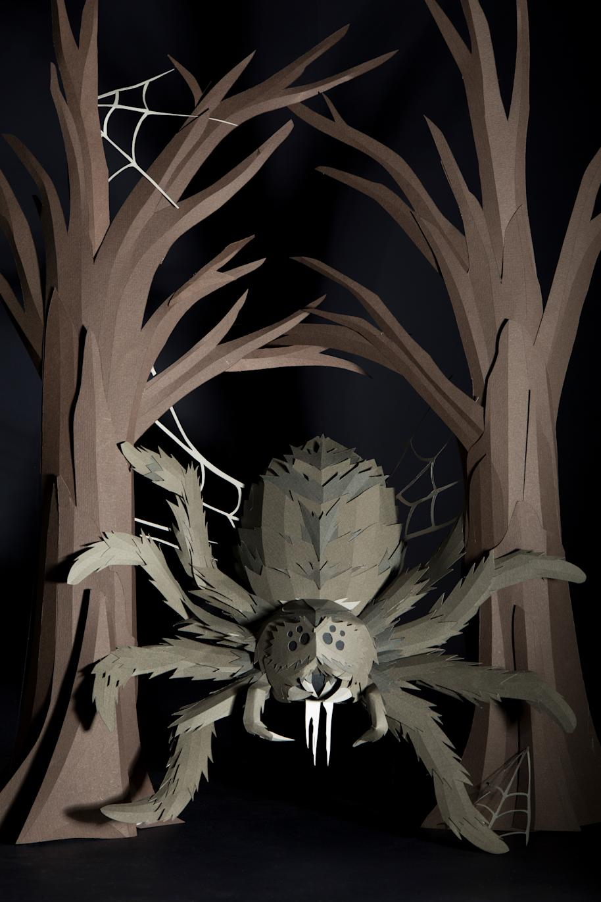
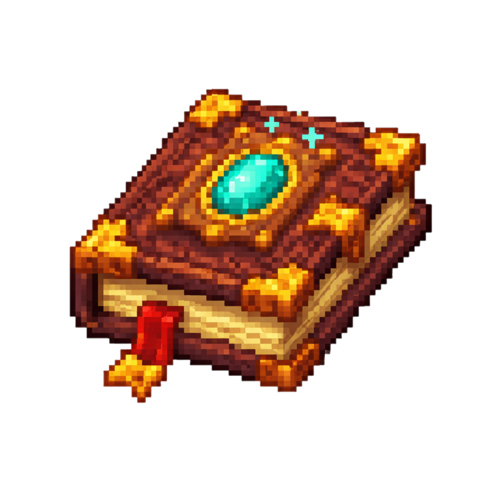
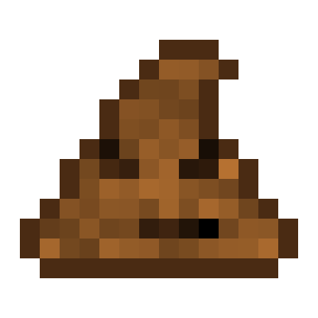
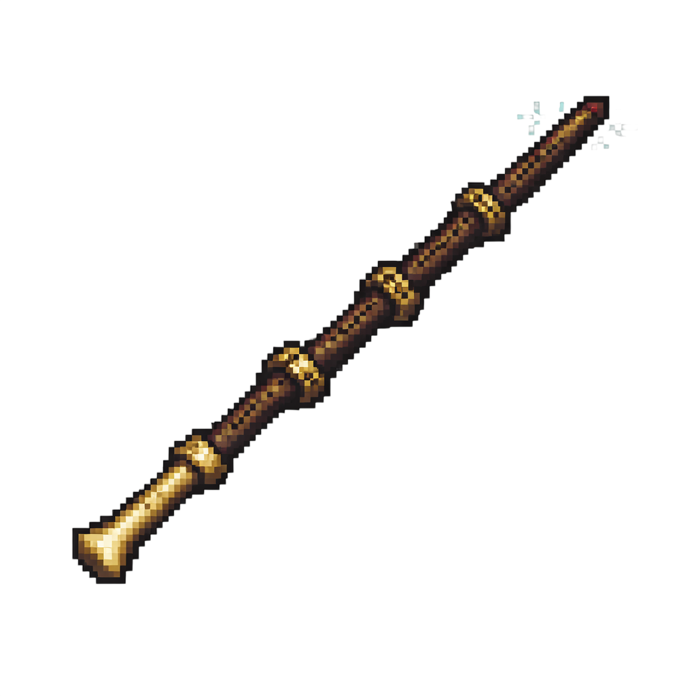
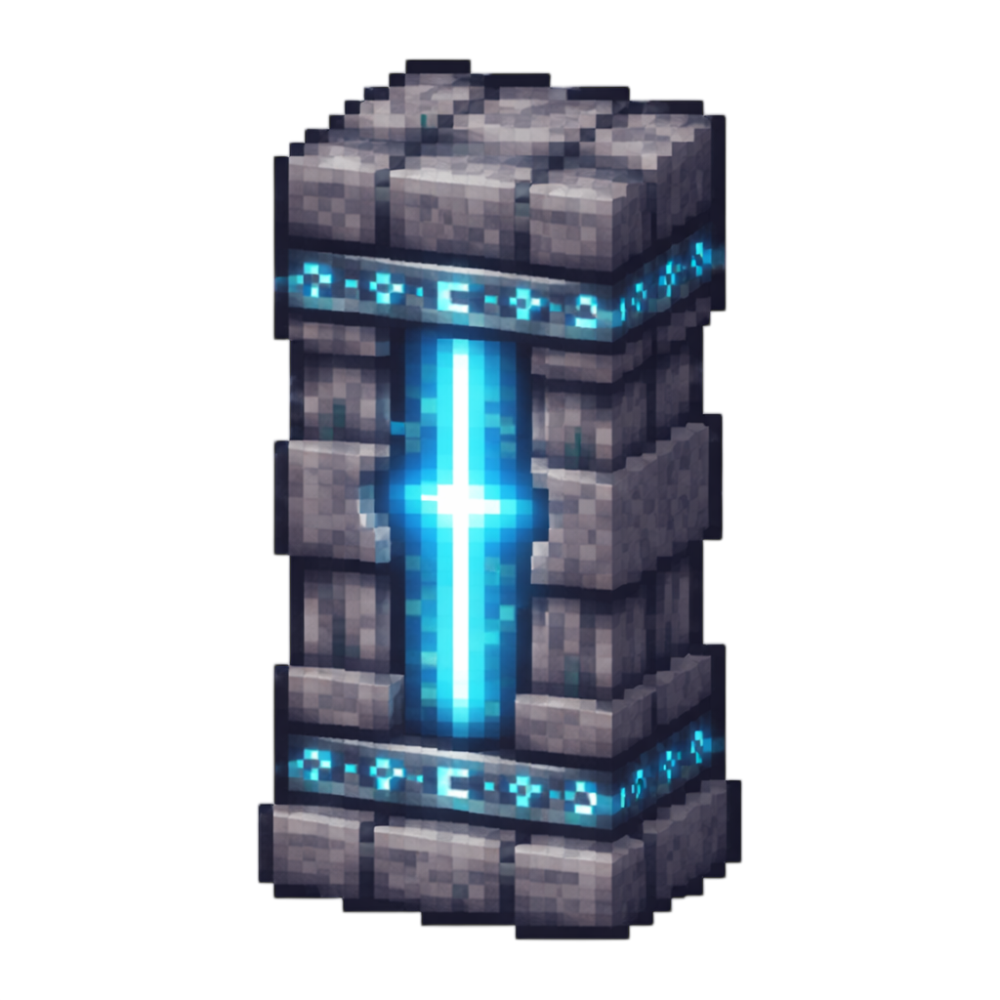
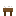
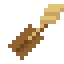

Spellbook
Spell archive
Browse the full implemented spell roster with rarity color coding, categories, and article links.
Open spellsA cinematic archive for spells, magical creatures, house lore, enchanted items, and darker ritual systems, rebuilt in the visual spirit of the official Harry Potter web experience.
This mod blends house sorting, mana, wand specialization, broom flight, owl delivery, Floo travel, magical creatures, dark curses, and ritual progression into a broader world that feels closer to a playable wizarding-world campaign than a simple spell add-on.
Start with spellbooks, sorting, and utility charms, then move into advanced wandcraft, brooms, warded bases, magical logistics, summoning, and eventually the mod's most dangerous systems like Horcrux rituals and Fiendfyre.
"Within these pages lie the charms, creatures, contraptions, and darker secrets that shape life in this enchanted world."From the shelves of the HogwartsMagic archive

Browse the full implemented spell roster with rarity color coding, categories, and article links.
Open spells
Review bosses, friendly summons, cursed entities, and magical mounts in the bestiary.
Open mobs
Death Eaters, Dementors, Fiendfyre, raids, and ritual entities give the mod its darker identity.
Open systemsThe archive now bears not only the atmosphere of the wider wizarding world, but the visual mark of this mod's own enchanted artifacts and house relics.

Your spellbook texture gives the archive a native item identity.

House progression now visually ties back to the actual mod item art.

Legendary gear presentation can use the same visual language as the game item itself.

Protective magic now carries a local icon instead of a generic fantasy placeholder.

The crafting stations can look like your mod's real magical furniture.

Flight crafting now has its own local artifact tile inside the site.